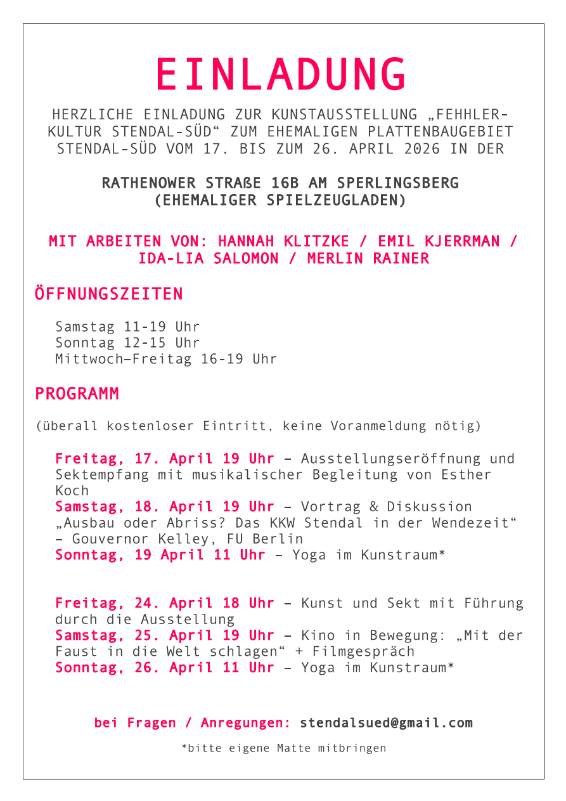

Stendal-Süd
2026

Leerstehende Plattenbauten, zugebaute Einfahrten und verwucherte Gehwege, wo einst das Leben blühte: Der Stadtteil Stendal-Süd war einst ein Zuhause für junge Familien und Arbeiterinnen des Kernkraftwerks. Heute gleicht das zugewachsene Gebiet einem verwunschenen Ort. Doch was passiert mit einem Land und einem Ort, den es auf einen Schlag so nicht mehr gab? Was passiert mit den Geschichten seiner Bewohnerinnen, wenn die Natur das Gebiet Stück für Stück zurückerobert? Und vor allem: Was bleibt?
Stendal-Süd
Am 17.04. um 19 Uhr wird die Ausstellung eröffnet, mit musikalischer Begleitung von Esther Koch.
Öffnungszeiten
Samstag 11:00–19:00 Uhr
Sonntag 12:00–15:00 Uhr
Mittwoch–Freitag 16:00–19:00 Uhr
Ort
39576 Stendal, Rathenower Straße 16B
Am Sperlingsberg (vormals Spielzeugladen)